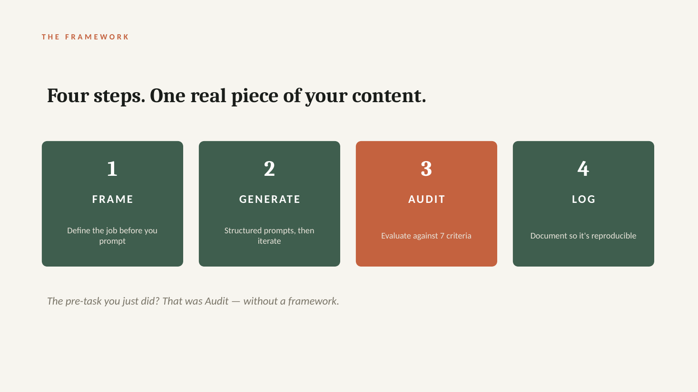
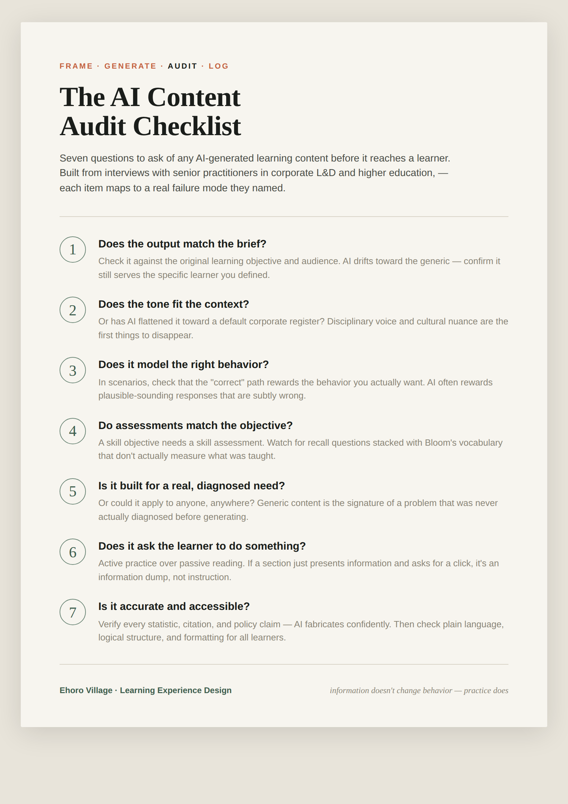
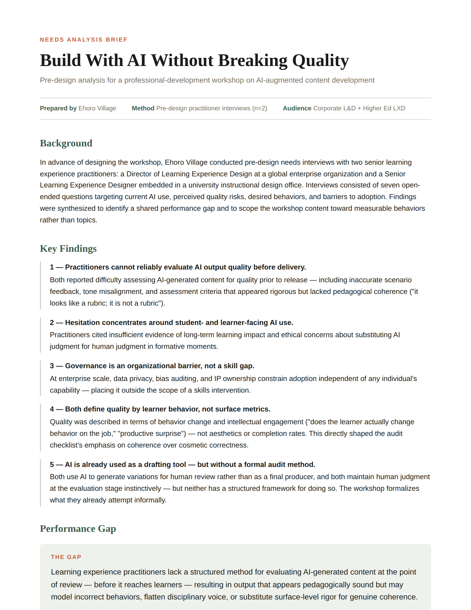
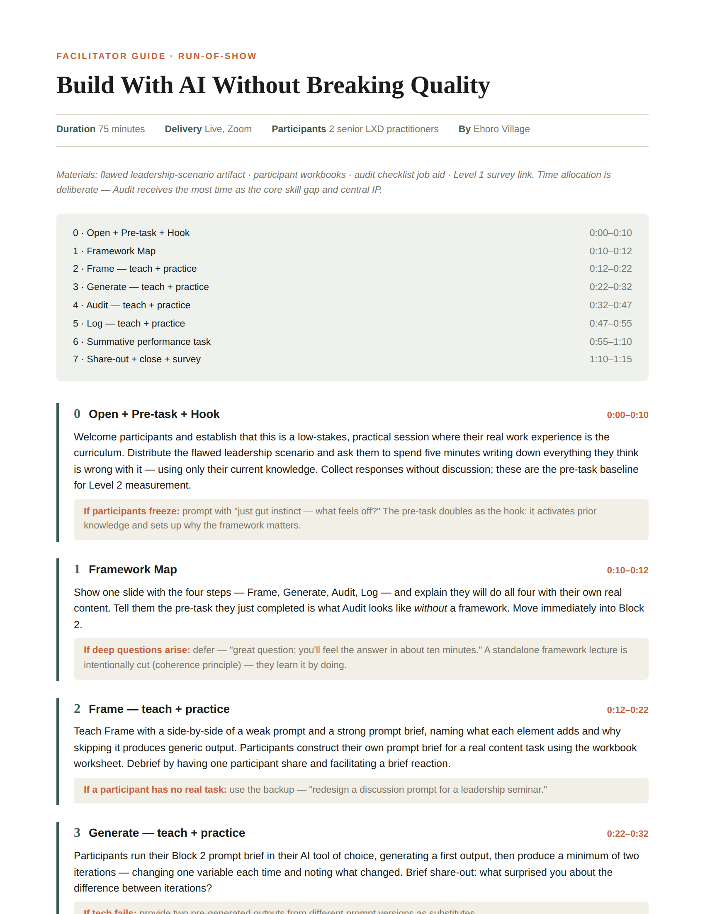
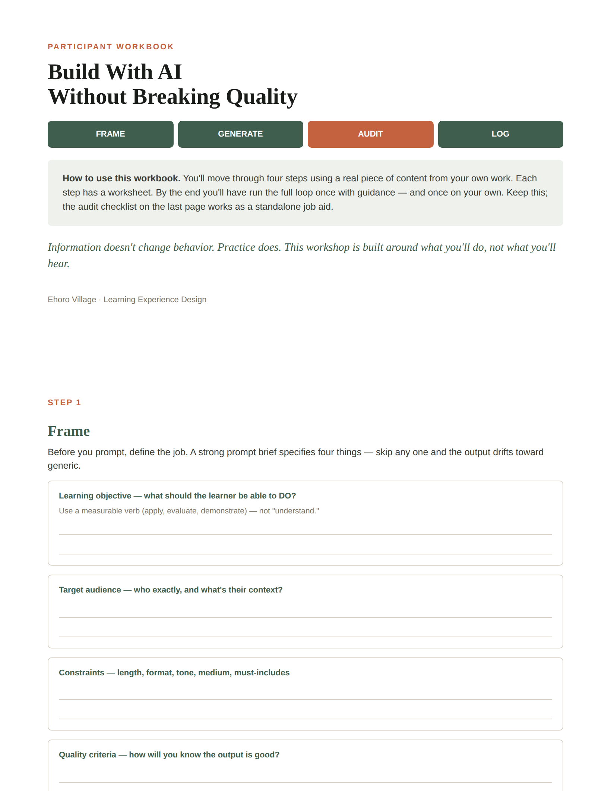

Learning Experience Design · Facilitation · Evaluation
Practitioners are using AI to make learning content faster than they can tell whether it's any good. I designed and ran a workshop that teaches them to audit AI output before it reaches a learner — and measured the skill gain across four Kirkpatrick levels.
The Problem
AI made content drafting fast — but speed exposed a new gap. The output looks finished. It reads fluently, cites confidently, formats cleanly. The question nobody had a method for: is it actually good, before it reaches a learner?
I started the way I start any design problem — with research. I interviewed two senior practitioners across the two worlds I design for: a Director of Learning Experience Design at a global enterprise, and a Senior Learning Experience Designer embedded in a university. One sentence from the higher-ed interview became the thesis of the whole workshop.
AI can help me execute faster, but it can also let me — or faculty — jump to solutions before we've actually diagnosed the problem.— Senior Learning Experience Designer, higher education
Needs Analysis
I synthesized the interviews into five findings and one performance gap. The most important move wasn't choosing what to teach — it was choosing what to cut.
The Framework
I productized my own AI methodology — the one I authored across 24+ Ehoro build sessions — into four steps a practitioner can apply to any content task. Audit is the heart of it, and what separates this from generic "AI tips."
The Loop

Workshop slide — the four-step loop, with Audit weighted as the core skill
Key Design Decisions
01 — Time follows the gap
Audit gets the most minutes.
Audit runs 15 minutes against 10 for every other step. It's the core skill gap from the needs analysis, so the time allocation follows the diagnosis, not convention.
02 — The hook is the pre-task
Let them fail before you teach.
I cut a standalone framework lecture. Participants meet a deliberately flawed AI module first and audit it cold — and that unaided baseline becomes the pre-measurement.
03 — Engineer the evidence in
One flaw per criterion.
The demo artifact carries exactly one flaw per checklist item, so the pre/post flaw-count captures the specific skill the workshop was built to produce — not a vague sense that it went well.
Artifacts
Every document below was built for this workshop. The process artifacts matter more than the polish.


The audit checklist job aid (left) and the needs analysis brief (right)


Facilitator guide run-of-show (left) and a participant workbook page (right)
Results
I ran the workshop as a pilot with two senior practitioners — one from enterprise L&D, one from higher education — with pre/post measurement and a two-week behavioral follow-up. Small cohort, reported honestly as directional.
Unaided, the enterprise reviewer caught the fabricated statistic the higher-ed reviewer read past; she caught the cultural flatness he missed. Expert instinct is real but domain-specific — that's the whole case for a checklist, in one data point.
Reflection
A pilot is only worth running if you let it change the work. The enterprise reviewer flagged a real irony: the audit criteria were right, but every worked example I used to teach them drew on soft-skills content — so the checklist meant to catch "this could be for anyone" was itself generic in its own teaching. I added a parallel technical-content column to the facilitator guide, so each flaw now shows up in both a leadership and a certification context. One workshop, both audiences.
A second, smaller fix: the Log step felt rushed at the end, so I made its asynchronous-completion option prominent rather than buried in a contingency note. The temptation after a pilot is to redesign everything. The discipline is changing only what the evidence supports — and being able to say exactly why.
How This Was Made
In keeping with the framework this workshop teaches, I'll be transparent about my own process. I used AI as a drafting partner for several of the production artifacts — the needs analysis brief, the facilitator guide, and the participant workbook — generating first passes I then audited, rewrote, and shaped against the interview data and my own design decisions.
The thinking is mine: the performance gap, what to scope out, the seven audit criteria, the time allocation, the assessment design, and every revision made from the pilot. AI accelerated the writing; it didn't make the calls. That's the entire point of Frame → Generate → Audit → Log — and applying it to my own work is the most honest demonstration of it I can offer.